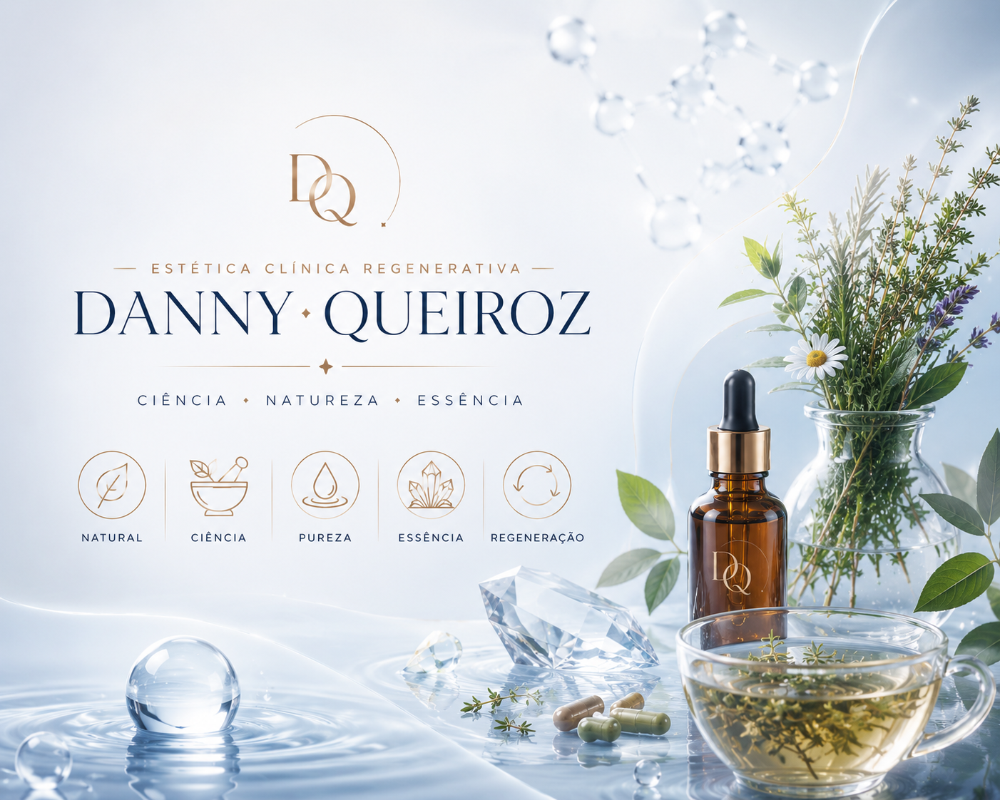

Ciência, natureza e individualização trabalhando juntas para promover saúde e regeneração.
A fitoterapia é uma prática baseada na utilização de ativos vegetais com finalidade de auxiliar o equilíbrio do organismo. Quando aplicada de forma responsável e baseada em evidências, pode contribuir para estratégias voltadas à saúde da pele, cabelos e qualidade de vida.
Seu uso não substitui acompanhamento médico ou outros tratamentos quando necessários. A proposta é integrar recursos que façam sentido para cada paciente dentro de uma abordagem individualizada.

Conheça também nossos tratamentos estéticos e conteúdos do blog.
Estratégias complementares para cuidados relacionados à qualidade da pele.
Abordagem integrativa para pacientes que desejam compreender melhor fatores relacionados aos cabelos e couro cabeludo.
Hábitos, rotina e equilíbrio do organismo também influenciam a aparência e a saúde da pele.
Sou graduada em Estética e Cosmética, especialista em regeneração cutânea e pós-graduada em Fitoterapia Aplicada à Estética e à Prática Esportiva.
Ao longo da minha trajetória busquei unir conhecimento científico, experiência clínica e estratégias integrativas para desenvolver protocolos personalizados.
Acredito que resultados consistentes acontecem quando observamos a pessoa de forma completa e não apenas um sintoma isolado.
Não. A fitoterapia pode atuar como recurso complementar quando adequada para cada caso.
Cada pessoa deve ser avaliada individualmente para verificar necessidades, objetivos e possíveis restrições.
Não. A proposta é observar diferentes aspectos relacionados ao organismo e aos hábitos de vida.
Durante a consulta avaliamos suas necessidades, histórico, objetivos e possibilidades para construir uma estratégia personalizada.
Agendar Consulta